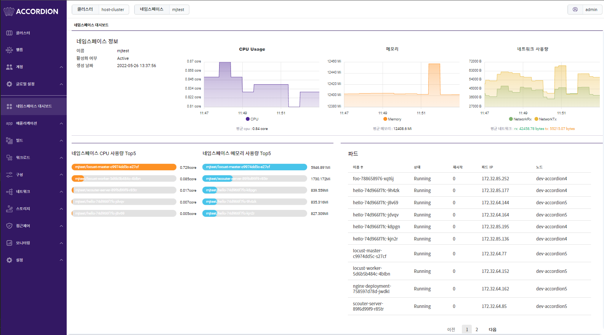
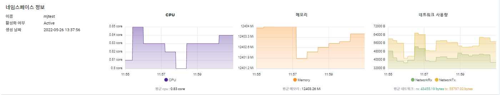
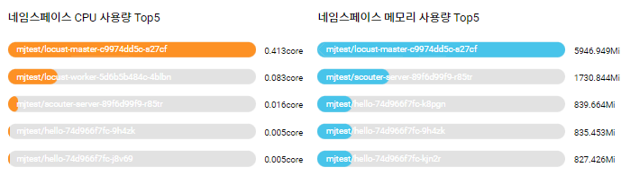
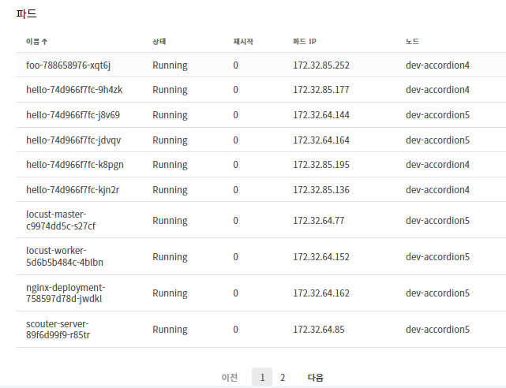

네임스페이스 대시보드
네임스페이스 대시보드는 네임스페이스 정보 및 네임스페이스 기준의 시스템 리소스(CPU/메모리 등), 네임스페이스에 배포되어있는 파드들의 상태 정보를 제공한다.

네임스페이스 대시보드 상단에서는 네임스페이스 설명 및 시스템 리소스 사용에 대한 정보를 제공한다.

| 항목 | 설명 |
|---|---|
이름 |
네임스페이스 이름 |
활성화 여부 |
네임스페이스 상태 (Active 또는 Terminating)
|
생성 날짜 |
생성된 시간 |
CPU |
5분간 CPU 사용량 (평균 CPU: CPU의 평균값) |
메모리 |
5분간 메모리 사용량 (평균 메모리: 메모리의 평균값) |
네트워크 사용량 |
5분간 네트워크 사용량 (평균 네트워크: 네트워크 사용량의 평균값) |
네임스페이스 대시보드 하단은 네임스페이스에 배포된 파드에 대한 정보를 제공한다. 좌측의 차트는 해당 네임스페이스에서 CPU 사용량이 가장 많은 파드와 메모리 사용량이 가장 많은 파드 각각 5개를 알려준다.

우측의 목록은 네임스페이스에 배포된 모든 파드의 목록을 나열한다.

| 항목 | 설명 |
|---|---|
이름 |
파드의 이름 |
상태 |
파드의 구동 상태 |
재시작 |
파드의 재시도 횟수 |
파드 IP |
파드의 IP |
노드 |
파드가 배포된 노드 |